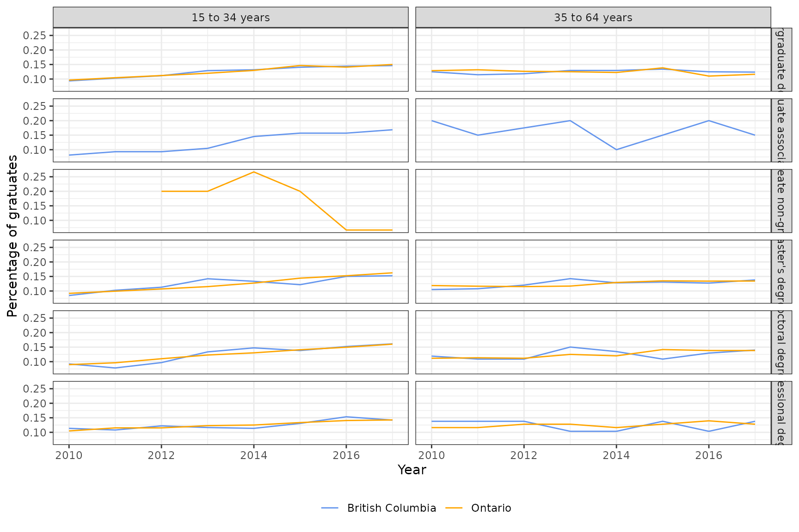

library(dplyr)
library(tidyr)
library(parsnip)
library(recipes)
library(epiprocess)
library(epipredict)
library(ggplot2)
theme_set(theme_bw())Panel data, or
longitudinal data, contain cross-sectional measurements of subjects over
time. The epipredict package is most suitable for running
forecasters on epidemiological panel data. A built-in example of this is
the case_death_rate_subset
dataset, which contains daily state-wise measures of
case_rate and death_rate for COVID-19 in
2021:
head(case_death_rate_subset, 3)
#> An `epi_df` object, 3 x 4 with metadata:
#> * geo_type = state
#> * time_type = day
#> * as_of = 2022-05-31 19:08:25.791826
#>
#> # A tibble: 3 × 4
#> geo_value time_value case_rate death_rate
#> * <chr> <date> <dbl> <dbl>
#> 1 ak 2020-12-31 35.9 0.158
#> 2 al 2020-12-31 65.1 0.438
#> 3 ar 2020-12-31 66.0 1.27epipredict functions work with data in epi_df
format. Despite the stated goal and name of the package, other panel
datasets are also valid candidates for epipredict
functionality, as long as they are in epi_df format.
Example panel data overview
In this vignette, we will demonstrate using epipredict
with employment panel data from Statistics Canada. We will be using Table
37-10-0115-01: Characteristics and median employment income of
longitudinal cohorts of postsecondary graduates two and five years after
graduation, by educational qualification and field of study (primary
groupings).
The full dataset contains yearly median employment income two and five years after graduation, and number of graduates. The data is stratified by variables such as geographic region (Canadian province), education, and age group. The year range of the dataset is 2010 to 2016, inclusive. The full dataset also contains metadata that describes the quality of data collected. For demonstration purposes, we make the following modifications to get a subset of the full dataset:
- Only keep provincial-level geographic region (the full data also has “Canada” as a region)
- Only keep “good” or better quality data rows, as indicated by the
STATUScolumn - Choose a subset of covariates and aggregate across the remaining ones. The chosen covariates are age group, and educational qualification.
To use this data with epipredict, we need to convert it
into epi_df format using
epiprocess::as_epi_df() with additional keys. In our case,
the additional keys are age_group, and
edu_qual. Note that in the above modifications, we encoded
time_value as type integer. This lets us set
time_type = "year", and ensures that lag and ahead
modifications later on are using the correct time units. See the
epiprocess::epi_df for a list of all the
time_types available.
Now, we are ready to use grad_employ_subset with
epipredict. Our epi_df contains 1,253 rows and
7 columns. Here is a quick summary of the columns in our
epi_df:
-
time_value(time value): year indateformat -
geo_value(geo value): province in Canada -
num_graduates(raw, time series value): number of graduates -
med_income_2y(raw, time series value): median employment income 2 years after graduation -
med_income_5y(raw, time series value): median employment income 5 years after graduation
-
age_group(key): one of two age groups, either 15 to 34 years, or 35 to 64 years -
edu_qual(key): one of 32 unique educational qualifications, e.g., “Master’s diploma”
# Rename for simplicity
employ <- grad_employ_subset
sample_n(employ, 6)
#> An `epi_df` object, 6 x 7 with metadata:
#> * geo_type = custom
#> * time_type = year
#> * as_of = 2022-07-19
#>
#> # A tibble: 6 × 7
#> geo_value time_value edu_qual age_group num_graduates med_income_2y
#> * <chr> <int> <fct> <fct> <dbl> <dbl>
#> 1 Saskatchewan 2016 Undergradua… 15 to 34… 2670 60400
#> 2 Saskatchewan 2012 Post-baccal… 35 to 64… 20 90700
#> 3 Quebec 2010 Master's ce… 15 to 34… 90 61300
#> 4 British Columbia 2012 Career, tec… 35 to 64… 3100 40200
#> 5 New Brunswick 2013 Career, tec… 35 to 64… 210 25000
#> 6 New Brunswick 2015 Undergradua… 35 to 64… 150 67600
#> # ℹ 1 more variable: med_income_5y <dbl>In the following sections, we will go over pre-processing the data in
the epi_recipe framework, and fitting a model and making
predictions within the epipredict framework and using the
package’s canned forecasters.
Autoregressive (AR) model to predict number of graduates in a year
Pre-processing
As a simple example, let’s work with the num_graduates
column for now. We will first pre-process by standardizing each numeric
column by the total within each group of keys. We do this since those
raw numeric values will vary greatly from province to province since
there are large differences in population.
employ_small <- employ %>%
group_by(geo_value, age_group, edu_qual) %>%
# Select groups where there are complete time series values
filter(n() >= 6) %>%
mutate(
num_graduates_prop = num_graduates / sum(num_graduates),
med_income_2y_prop = med_income_2y / sum(med_income_2y),
med_income_5y_prop = med_income_5y / sum(med_income_5y)
) %>%
ungroup()
head(employ_small)
#> An `epi_df` object, 6 x 10 with metadata:
#> * geo_type = custom
#> * time_type = year
#> * as_of = 2022-07-19
#>
#> # A tibble: 6 × 10
#> geo_value time_value edu_qual age_group num_graduates med_income_2y
#> * <chr> <int> <fct> <fct> <dbl> <dbl>
#> 1 Newfoundland and La… 2010 Career,… 15 to 34… 420 45400
#> 2 Newfoundland and La… 2010 Career,… 35 to 64… 130 35700
#> 3 Newfoundland and La… 2010 Career,… 15 to 34… 620 46300
#> 4 Newfoundland and La… 2010 Career,… 35 to 64… 140 45300
#> 5 Newfoundland and La… 2010 Undergr… 15 to 34… 1050 59500
#> 6 Newfoundland and La… 2010 Undergr… 35 to 64… 130 80300
#> # ℹ 4 more variables: med_income_5y <dbl>, num_graduates_prop <dbl>,
#> # med_income_2y_prop <dbl>, med_income_5y_prop <dbl>Below is a visualization for a sample of the small data for British Columbia and Ontario. Note that some groups do not have any time series information since we filtered out all time series with incomplete dates.
employ_small %>%
filter(geo_value %in% c("British Columbia", "Ontario")) %>%
filter(grepl("degree", edu_qual, fixed = T)) %>%
group_by(geo_value, time_value, edu_qual, age_group) %>%
summarise(num_graduates_prop = sum(num_graduates_prop), .groups = "drop") %>%
ggplot(aes(x = time_value, y = num_graduates_prop, color = geo_value)) +
geom_line() +
scale_colour_manual(values = c("Cornflowerblue", "Orange"), name = "") +
facet_grid(rows = vars(edu_qual), cols = vars(age_group)) +
xlab("Year") +
ylab("Percentage of gratuates") +
theme(legend.position = "bottom")
We will predict the standardized number of graduates (a proportion) in the next year (time ) using an autoregressive model with three lags (i.e., an AR(3) model). Such a model is represented algebraically like this:
where is the proportion of graduates at time in location and age group with education quality .
In the pre-processing step, we need to create additional columns in
employ for each of
,
,
,
and
.
We do this via an epi_recipe. Note that creating an
epi_recipe alone doesn’t add these outcome and predictor
columns; the recipe just stores the instructions for adding them.
Our epi_recipe should add one ahead column
representing
and 3 lag columns representing
,
,
and
(it’s more accurate to think of the 0th “lag” as the “current” value
with 2 lags, but that’s not quite how the processing works). Also note
that since we specified our time_type to be
year, our lag and lead values are
both in years.
r <- epi_recipe(employ_small) %>%
step_epi_ahead(num_graduates_prop, ahead = 1) %>%
step_epi_lag(num_graduates_prop, lag = 0:2) %>%
step_epi_naomit()
r
#>
#> ── Epi Recipe ──────────────────────────────────────────────────────────────────
#>
#> ── Inputs
#> Number of variables by role
#> raw: 6
#> key: 2
#> geo_value: 1
#> time_value: 1
#>
#> ── Operations
#> 1. Leading: num_graduates_prop by 1
#> 2. Lagging: num_graduates_prop by 0, 1, 2
#> 3. • Removing rows with NA values in: all_predictors()
#> 4. • Removing rows with NA values in: all_outcomes()Let’s apply this recipe using prep and bake
to generate and view the lag and ahead
columns.
# Display a sample of the pre-processed data
bake_and_show_sample <- function(recipe, data, n = 5) {
recipe %>%
prep(data) %>%
bake(new_data = data) %>%
sample_n(n)
}
r %>% bake_and_show_sample(employ_small)
#> An `epi_df` object, 5 x 14 with metadata:
#> * geo_type = custom
#> * time_type = integer
#> * as_of = 2022-07-19
#>
#> # A tibble: 5 × 14
#> geo_value time_value edu_qual age_group num_graduates med_income_2y
#> * <chr> <int> <fct> <fct> <dbl> <dbl>
#> 1 British Columbia 2014 Professiona… 15 to 34… 390 90100
#> 2 Alberta 2013 Career, tec… 35 to 64… 930 57700
#> 3 British Columbia 2016 Undergradua… 15 to 34… 250 33800
#> 4 Quebec 2016 Master's de… 15 to 34… 6500 59100
#> 5 Quebec 2016 Master's de… 35 to 64… 2310 78400
#> # ℹ 8 more variables: med_income_5y <dbl>, num_graduates_prop <dbl>,
#> # med_income_2y_prop <dbl>, med_income_5y_prop <dbl>,
#> # ahead_1_num_graduates_prop <dbl>, lag_0_num_graduates_prop <dbl>,
#> # lag_1_num_graduates_prop <dbl>, lag_2_num_graduates_prop <dbl>We can see that the prep and bake steps
created new columns according to our epi_recipe:
-
ahead_1_num_graduates_propcorresponds to -
lag_0_num_graduates_prop,lag_1_num_graduates_prop, andlag_2_num_graduates_propcorrespond to , , and respectively.
Model fitting and prediction
Since our goal for now is to fit a simple autoregressive model, we
can use parsnip::linear_reg()
with the default engine lm, which fits a linear regression
using ordinary least squares.
We will use epi_workflow with the
epi_recipe we defined in the pre-processing section along
with the parsnip::linear_reg() model. Note that
epi_workflow is a container and doesn’t actually do the
fitting. We have to pass the workflow into fit() to get our
estimated model coefficients
.
wf_linreg <- epi_workflow(r, linear_reg()) %>%
fit(employ_small)
summary(extract_fit_engine(wf_linreg))
#>
#> Call:
#> stats::lm(formula = ..y ~ ., data = data)
#>
#> Residuals:
#> Min 1Q Median 3Q Max
#> -0.121776 -0.013656 -0.003648 0.009483 0.240598
#>
#> Coefficients:
#> Estimate Std. Error t value Pr(>|t|)
#> (Intercept) 0.16047 0.01009 15.904 < 2e-16 ***
#> lag_0_num_graduates_prop 0.22221 0.04601 4.830 1.73e-06 ***
#> lag_1_num_graduates_prop -0.13455 0.04638 -2.901 0.00385 **
#> lag_2_num_graduates_prop -0.14138 0.04691 -3.014 0.00269 **
#> ---
#> Signif. codes: 0 '***' 0.001 '**' 0.01 '*' 0.05 '.' 0.1 ' ' 1
#>
#> Residual standard error: 0.03271 on 605 degrees of freedom
#> Multiple R-squared: 0.07029, Adjusted R-squared: 0.06568
#> F-statistic: 15.25 on 3 and 605 DF, p-value: 1.415e-09This output tells us the coefficients of the fitted model; for instance, the estimated intercept is 0.16 and the coefficient for is 0.222. The summary also tells us that all estimated coefficients are significantly different from zero. Extracting the 95% confidence intervals for the coefficients also leads us to the same conclusion: all the coefficient estimates are significantly different from 0.
confint(extract_fit_engine(wf_linreg))
#> 2.5 % 97.5 %
#> (Intercept) 0.1406517 0.18028088
#> lag_0_num_graduates_prop 0.1318541 0.31255983
#> lag_1_num_graduates_prop -0.2256396 -0.04346564
#> lag_2_num_graduates_prop -0.2335061 -0.04925007Now that we have our workflow, we can generate predictions from a subset of our data. For this demo, we will predict the number of graduates using the last 2 years of our dataset.
latest <- get_test_data(recipe = r, x = employ_small)
preds <- stats::predict(wf_linreg, latest) %>% filter(!is.na(.pred))
# Display a sample of the prediction values, excluding NAs
preds %>% sample_n(5)
#> An `epi_df` object, 5 x 5 with metadata:
#> * geo_type = custom
#> * time_type = year
#> * as_of = 2022-07-19
#>
#> # A tibble: 5 × 5
#> geo_value time_value age_group edu_qual .pred
#> * <chr> <int> <fct> <fct> <dbl>
#> 1 Manitoba 2016 35 to 64 years Career, technical o… 0.151
#> 2 Quebec 2016 35 to 64 years Doctoral degree 0.154
#> 3 British Columbia 2016 35 to 64 years Post-baccalaureate … 0.150
#> 4 Newfoundland and Labrador 2016 15 to 34 years Career, technical o… 0.163
#> 5 Alberta 2016 35 to 64 years Post-baccalaureate … 0.146We can do this using the augment function too. Note that
predict and augment both still return an
epiprocess::epi_df with all of the keys that were present
in the original dataset.
augment(wf_linreg, latest) %>% sample_n(5)
#> An `epi_df` object, 5 x 11 with metadata:
#> * geo_type = custom
#> * time_type = year
#> * as_of = 2022-07-19
#>
#> # A tibble: 5 × 11
#> geo_value time_value age_group edu_qual .pred num_graduates med_income_2y
#> * <chr> <int> <fct> <fct> <dbl> <dbl> <dbl>
#> 1 Saskatchewan 2016 35 to 64 … Undergr… 0.148 240 62600
#> 2 Ontario 2014 35 to 64 … Profess… NA 110 81200
#> 3 Ontario 2015 15 to 34 … Master'… NA 200 63700
#> 4 Quebec 2016 15 to 34 … Career,… 0.154 8620 40600
#> 5 Ontario 2015 15 to 34 … Master'… NA 10910 65500
#> # ℹ 4 more variables: med_income_5y <dbl>, num_graduates_prop <dbl>,
#> # med_income_2y_prop <dbl>, med_income_5y_prop <dbl>Model diagnostics
First, we’ll plot the residuals (that is, ) against the fitted values ().
par(mfrow = c(2, 2), mar = c(5, 3, 1.2, 0))
plot(extract_fit_engine(wf_linreg))
The fitted values vs. residuals plot shows us that the residuals are mostly clustered around zero, but do not form an even band around the zero line, indicating that the variance of the residuals is not constant. Additionally, the fitted values vs. square root of standardized residuals makes this more obvious - the spread of the square root of standardized residuals varies with the fitted values.
The Q-Q plot shows us that the residuals have heavier tails than a Normal distribution. So the normality of residuals assumption doesn’t hold either.
Finally, the residuals vs. leverage plot shows us that we have a few influential points based on the Cook’s distance (those outside the red dotted line).
Since we appear to be violating the linear model assumptions, we might consider transforming our data differently, or considering a non-linear model, or something else.
AR model with exogenous inputs
Now suppose we want to model the 1-step-ahead 5-year employment income using current and two previous values, while also incorporating information from the other two time-series in our dataset: the 2-year employment income and the number of graduates in the previous 2 years. We would do this using an autoregressive model with exogenous inputs, defined as follows:
where is the 5-year median income (proportion) at time (in location , age group with education quality ), is the 2-year median income (proportion) at time , and is the number of graduates (proportion) at time .
Pre-processing
Again, we construct an epi_recipe detailing the
pre-processing steps.
rx <- epi_recipe(employ_small) %>%
step_epi_ahead(med_income_5y_prop, ahead = 1) %>%
# 5-year median income has current, and two lags c(0, 1, 2)
step_epi_lag(med_income_5y_prop, lag = 0:2) %>%
# But the two exogenous variables have current values, and 1 lag c(0, 1)
step_epi_lag(med_income_2y_prop, lag = c(0, 1)) %>%
step_epi_lag(num_graduates_prop, lag = c(0, 1)) %>%
step_epi_naomit()
bake_and_show_sample(rx, employ_small)
#> An `epi_df` object, 5 x 18 with metadata:
#> * geo_type = custom
#> * time_type = integer
#> * as_of = 2022-07-19
#>
#> # A tibble: 5 × 18
#> geo_value time_value edu_qual age_group num_graduates med_income_2y
#> * <chr> <int> <fct> <fct> <dbl> <dbl>
#> 1 British Columbia 2014 Master's de… 15 to 34… 2240 65400
#> 2 British Columbia 2016 Career, tec… 15 to 34… 4090 45000
#> 3 Alberta 2015 Post career… 35 to 64… 70 86300
#> 4 British Columbia 2016 Career, tec… 35 to 64… 1240 44100
#> 5 Quebec 2016 Undergradua… 35 to 64… 3780 58600
#> # ℹ 12 more variables: med_income_5y <dbl>, num_graduates_prop <dbl>,
#> # med_income_2y_prop <dbl>, med_income_5y_prop <dbl>,
#> # ahead_1_med_income_5y_prop <dbl>, lag_0_med_income_5y_prop <dbl>,
#> # lag_1_med_income_5y_prop <dbl>, lag_2_med_income_5y_prop <dbl>,
#> # lag_0_med_income_2y_prop <dbl>, lag_1_med_income_2y_prop <dbl>,
#> # lag_0_num_graduates_prop <dbl>, lag_1_num_graduates_prop <dbl>Model fitting & post-processing
Before fitting our model and making predictions, let’s add some
post-processing steps using a few frosting
layers to do a few things:
- Threshold our predictions to 0. We are predicting proportions, which can’t be negative. And the transformed values back to dollars and people can’t be negative either.
- Generate prediction intervals based on residual quantiles, allowing us to quantify the uncertainty associated with future predicted values.
- Convert our predictions back to income values and number of
graduates, rather than standardized proportions. We do this via the
frosting layer
layer_population_scaling().
# Create dataframe of the sums we used for standardizing
# Only have to include med_income_5y since that is our outcome
totals <- employ_small %>%
group_by(geo_value, age_group, edu_qual) %>%
summarise(med_income_5y_tot = sum(med_income_5y), .groups = "drop")
# Define post-processing steps
f <- frosting() %>%
layer_predict() %>%
layer_naomit(.pred) %>%
layer_threshold(.pred, lower = 0) %>%
# 90% prediction interval
layer_residual_quantiles(
quantile_levels = c(0.1, 0.9),
symmetrize = FALSE
) %>%
layer_population_scaling(
.pred, .pred_distn,
df = totals, df_pop_col = "med_income_5y_tot"
)
wfx_linreg <- epi_workflow(rx, parsnip::linear_reg()) %>%
fit(employ_small) %>%
add_frosting(f)
summary(extract_fit_engine(wfx_linreg))
#>
#> Call:
#> stats::lm(formula = ..y ~ ., data = data)
#>
#> Residuals:
#> Min 1Q Median 3Q Max
#> -0.055944 -0.004665 -0.000817 0.004603 0.053136
#>
#> Coefficients:
#> Estimate Std. Error t value Pr(>|t|)
#> (Intercept) 0.063735 0.007913 8.054 4.3e-15 ***
#> lag_0_med_income_5y_prop 0.201056 0.054492 3.690 0.000245 ***
#> lag_1_med_income_5y_prop 0.076455 0.054467 1.404 0.160922
#> lag_2_med_income_5y_prop 0.082542 0.038244 2.158 0.031302 *
#> lag_0_med_income_2y_prop 0.098495 0.049097 2.006 0.045290 *
#> lag_1_med_income_2y_prop 0.024241 0.048291 0.502 0.615872
#> lag_0_num_graduates_prop 0.031403 0.016356 1.920 0.055334 .
#> lag_1_num_graduates_prop 0.049311 0.015970 3.088 0.002111 **
#> ---
#> Signif. codes: 0 '***' 0.001 '**' 0.01 '*' 0.05 '.' 0.1 ' ' 1
#>
#> Residual standard error: 0.01137 on 601 degrees of freedom
#> Multiple R-squared: 0.1824, Adjusted R-squared: 0.1729
#> F-statistic: 19.16 on 7 and 601 DF, p-value: < 2.2e-16Based on the summary output for this model, we can examine confidence intervals and perform hypothesis tests as usual.
Let’s take a look at the predictions along with their 90% prediction intervals.
latest <- get_test_data(recipe = rx, x = employ_small)
predsx <- predict(wfx_linreg, latest)
# Display predictions along with prediction intervals
predsx %>%
select(
geo_value, time_value, edu_qual, age_group,
.pred_scaled, .pred_distn_scaled
) %>%
head() %>%
pivot_quantiles_wider(.pred_distn_scaled)
#> # A tibble: 6 × 7
#> geo_value time_value edu_qual age_group .pred_scaled `0.1` `0.9`
#> <chr> <int> <fct> <fct> <dbl> <dbl> <dbl>
#> 1 Alberta 2016 Career, technical o… 15 to 34… 44930. 41354. 49044.
#> 2 Alberta 2016 Career, technical o… 35 to 64… 46384. 42684. 50641.
#> 3 Alberta 2016 Career, technical o… 15 to 34… 54732. 50430. 59681.
#> 4 Alberta 2016 Career, technical o… 35 to 64… 57533. 53042. 62701.
#> 5 Alberta 2016 Post career, techni… 15 to 34… 74062. 68618. 80326.
#> 6 Alberta 2016 Post career, techni… 35 to 64… 86335. 79619. 94063.Using canned forecasters
We’ve seen what we can do with non-epidemiological panel data using
the recipes frame, with epi_recipe for pre-processing,
epi_workflow for model fitting, and frosting
for post-processing.
epipredict also comes with canned forecasters that do
all of those steps behind the scenes for some simple models. Even though
we aren’t working with epidemiological data, canned forecasters still
work as expected, out of the box. We will demonstrate this with the
simple flatline_forecaster
and the direct autoregressive (AR) forecaster arx_forecaster.
For both illustrations, we will continue to use the
employ_small dataset with the transformed numeric columns
that are proportions within each group by the keys in our
epi_df.
Flatline forecaster
In this first example, we’ll use flatline_forecaster to
make a simple prediction of the 2-year median income for the next year,
based on one previous time point. This model is representated
algebraically as:
where
is the 2-year median income (proportion) at time
.
out_fl <- flatline_forecaster(employ_small, "med_income_2y_prop",
args_list = flatline_args_list(ahead = 1)
)
out_fl
#> ══ A basic forecaster of type flatline ═════════════════════════════════════════
#>
#> This forecaster was fit on 2024-08-13 23:02:41.
#>
#> Training data was an <epi_df> with:
#> • Geography: custom,
#> • Other keys: age_group and edu_qual,
#> • Time type: year,
#> • Using data up-to-date as of: 2022-07-19.
#>
#> ── Predictions ─────────────────────────────────────────────────────────────────
#>
#> A total of 158 predictions are available for
#> • 10 unique geographic regions,
#> • At forecast dates: 2016,
#> • For target dates: 2017.
#> Autoregressive forecaster with exogenous inputs
In this second example, we’ll use arx_forecaster to make
a prediction of the 5-year median income based using two lags,
and using two lags on two exogenous variables: 2-year median
income and number of graduates.
The canned forecaster gives us a simple way of making this forecast since it defines the recipe, workflow, and post-processing steps behind the scenes. This is very similar to the model we introduced in the “Autoregressive Linear Model with Exogenous Inputs” section of this article, but where all inputs have the same number of lags.
arx_args <- arx_args_list(lags = c(0L, 1L), ahead = 1L)
out_arx_lr <- arx_forecaster(employ_small, "med_income_5y_prop",
c("med_income_5y_prop", "med_income_2y_prop", "num_graduates_prop"),
args_list = arx_args
)
out_arx_lr
#> ══ A basic forecaster of type ARX Forecaster ═══════════════════════════════════
#>
#> This forecaster was fit on 2024-08-13 23:02:41.
#>
#> Training data was an <epi_df> with:
#> • Geography: custom,
#> • Other keys: age_group and edu_qual,
#> • Time type: year,
#> • Using data up-to-date as of: 2022-07-19.
#>
#> ── Predictions ─────────────────────────────────────────────────────────────────
#>
#> A total of 157 predictions are available for
#> • 10 unique geographic regions,
#> • At forecast dates: 2016,
#> • For target dates: 2017.
#> Other changes to the direct AR forecaster, like changing the engine, also work as expected. Below we use a boosted tree model instead of a linear regression.
out_arx_rf <- arx_forecaster(
employ_small, "med_income_5y_prop",
c("med_income_5y_prop", "med_income_2y_prop", "num_graduates_prop"),
trainer = parsnip::boost_tree(mode = "regression", trees = 20),
args_list = arx_args
)
out_arx_rf
#> ══ A basic forecaster of type ARX Forecaster ═══════════════════════════════════
#>
#> This forecaster was fit on 2024-08-13 23:02:42.
#>
#> Training data was an <epi_df> with:
#> • Geography: custom,
#> • Other keys: age_group and edu_qual,
#> • Time type: year,
#> • Using data up-to-date as of: 2022-07-19.
#>
#> ── Predictions ─────────────────────────────────────────────────────────────────
#>
#> A total of 157 predictions are available for
#> • 10 unique geographic regions,
#> • At forecast dates: 2016,
#> • For target dates: 2017.
#> Conclusion
While the purpose of epipredict is to allow tidymodels to operate on epidemiology data, it can be easily adapted (both the workflows and the canned forecasters) to work for generic panel data modelling.